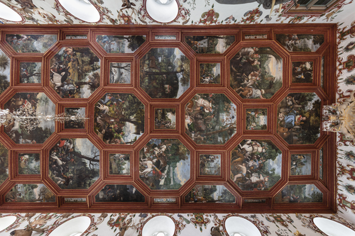

Die Saaldecke der Renaissance von Balthasar Katzenberger
Wikibase link: https://computational-publishing-service.wikibase.cloud/entity/Q229
Kurator: Seeger, Ulrike
Die Saaldecke der Renaissance von Balthasar Katzenberger
Vertragsbedingungen
Der Vertrag zu den 69 Deckengemälden des Großen Saals zwischen
Graf Wolfgang und Balthasar Katzenberger hat sich erhalten.[1]
Darin wurde am 22. September 1601 festgelegt, dass der Maler Balthasar
Katzenberger aus Würzburg „Ihren gnaden [Graf Wolfgang]
die deckh im Neuen Saal mit Wasserfarb auff Tuech von allerlej Jagden,
Waydtwerkh und andern was Ire g. Ime jedesmals fürgeben und beuehlen
laßen, aufs schönst Säuberst, Künstlichstelichen und
frech aussehendt mallen soll, alle Simbs der gannzen Deckh sowoll auch
neben herrumb das Simbs alles mit brauner nus oder sonsten ein Dunckhel
holz färb, wie es Iren gnaden gefellig anstreichen“.[2]
Graf Wolfgang scheint sowohl das Thema der Jagd vorgegeben als auch die
zugehörigen druckgraphischen Vorlagen zur Verfügung gestellt zu
haben. Den Passus „allerlej Jagden, Waydtwerkh und andern was Ire g.
Ime jedesmals fürgeben und beuehlen laßen“ hat man
wahrscheinlich dahingehend zu deuten, dass der Auftraggeber in absehbarer
Zeit noch weitere Vorlagen liefern könnte. Die zur Anwendung gelangte
Technik „mit Wasserfarb auff Tuech“ scheint nur die zweite
Wahl gewesen zu sein. In den Vertrag wurde der Zusatz aufgenommen, dass,
sollte Graf Wolfgang sich doch noch für Ölfarben entscheiden, er
anstatt der vereinbarten 195 Gulden 260 Gulden zu zahlen habe, jeweils
zuzüglich der täglichen Verpflegung:
„Da [= Falls] es aber Ihren Gnaden gefellig wer solche deckh
mit öll färb zuverferttigen soll Ihme für seine belohnung
gegeben werden, Zway hundert und Sechzig gülden. Die Cost und Suppen
wie gemelt“.[3]
Laut Restaurierungsbericht malte Katzenberger in Leimfarben auf grober,
hellgelb grundierter Leinwand.[4] Erst Christian Thalwitzer, der
die Gemälde 1710/11 überarbeitete, verstärkte ihre
Leuchtkraft mit einer roten Grundierung und Ölfarben, was ebenfalls
die Restaurierung der Jahre 1982–1989 erbrachte. Eines der
quadratischen Gemälde (Q1) überliefert auf der Rückseite
die originale Maltechnik. Katzenberger hatte das Gemälde angelegt und
in der rechten Bildhälfte nahezu fertiggestellt, als sich für
die in der linken Bildhälfte angelegte Figur eine Änderung
ergab. Da Leimfarben schlecht decken, verzichtete er auf eine
Übermalung und drehte die Leinwand kurzerhand um.[5]
Die Gemälde entstanden in der Werkstatt, wobei für die
achteckigen Gemälde mit einer Höhe von 3,65 Metern ein
Gerüst gezimmert werden musste. Da der Vertrag zu Beginn der dunklen
Jahreszeit Ende September abgeschlossen wurde, legte Graf Wolfgang
vorsorglich fest, dass Katzenberger nur bei Tageslicht malen dürfe:
„In Summa solche Deckh wie gemelt [= wie oben vereinbart] er
selbsten alles bej tag und nit bej nacht aufs Künstlichst und
schönst machen und verferttigen“. Der Auftraggeber stellte die
Leinwand, die Farben, Gold und Steinöl für die Gesimse. Gemalt
hat Katzenberger die Bilder unter Aufsicht des Grafen in Weikersheim, da
sein Lohn neben den 195 Gulden aus morgendlicher und abendlicher
Verpflegung mit Brot und Suppe ohne Fleisch bestand.
Katzenberger benötigte für die Arbeit, die er ganz allein, also
ohne Kompagnon, nur mit Malergehilfen leistete, dreizehn Monate. Die
Fertigstellung quittierte er am 22. November 1602.[6] In die
zahlreichen Künstlersignaturen von Graf Wolfgangs
Renaissanceausstattung reihte er sich auf dem Achteck-Gemälde Nr. 13
ein, das sich knapp östlich der Mitte der Decke befindet.
Sinnfällig nutzte er das Thema der Wildkatzenjagd für ein
Selbstporträt mit Pinsel, Malstock und Palette. Rechts unten notierte
er in schwarzer Schrift: „Balthasar Katzenberger vo[n]
Wurtzburg maler hat diese gantze Decken in ⋅ 13 ⋅ monat alleins
gemalet 1602“.[7] Rechnet man sechs Arbeitstage pro Woche,
so entfallen fünf Tage auf ein Bild, wobei freilich die 12
Blumenbilder deutlich weniger Zeit in Anspruch nahmen als die 19
großen Achteckbilder.
Balthasar Katzenberger schuf für Schloss Weikersheim seine
umfangreichsten erhaltenen Werke. Über weitere Anhaltspunkte zu
seinem Oeuvre und seinem Lebensweg unterrichtet der Eintrag im Allgemeinen
Künstlerlexikon.[8]
Wikibase link: https://computational-publishing-service.wikibase.cloud/entity/Q230
Title: Ceiling Decoration of the Knights’ Hall – Eastern Part of the Ceiling
Year: 2018
Description: Balthasar Kazenberger, painter, 22.09.1601/22.11.1602 - Jan van der Straet, painter - Christian Thalwitzer, restorer, 1710/1711
